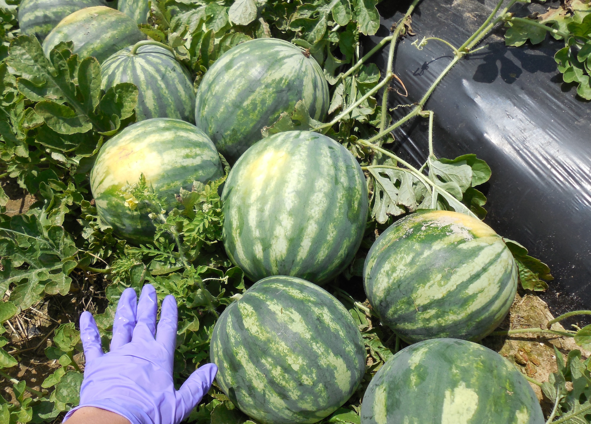

I am an ecological researcher located in southern Georgia. My goals include improving environmental health and the sustainability of agricultural production systems.
contact: csharris9@gmail.comResearch
I am part of the Vellidis Research Group at the University of Georgia investigating pathogenic bacteria in agricultural environments. We aim to identify agricultural practices and environmental conditions affecting the presence and survival of Salmonella on fresh produce. The focus of our current project is Salmonella in irrigation water, and the transfer of Salmonella from pond or well water to various fruit and vegetable crops grown under pivot, drip, or sprinkler irrigation systems. Visit www.vellidis.org.
Previous research
Master's thesis: Impacts of storm-driven surface runoff and landscape characteristics on Salmonella in farm irrigation ponds in south Georgia, USA

